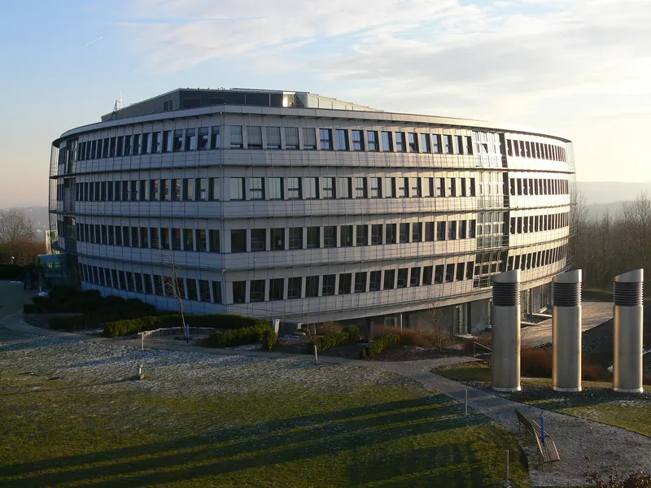
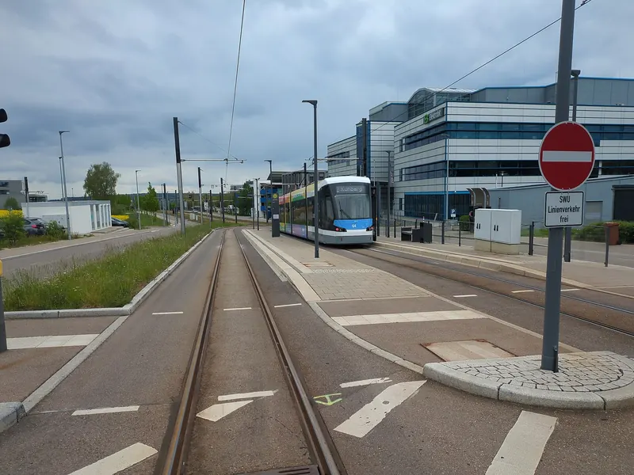
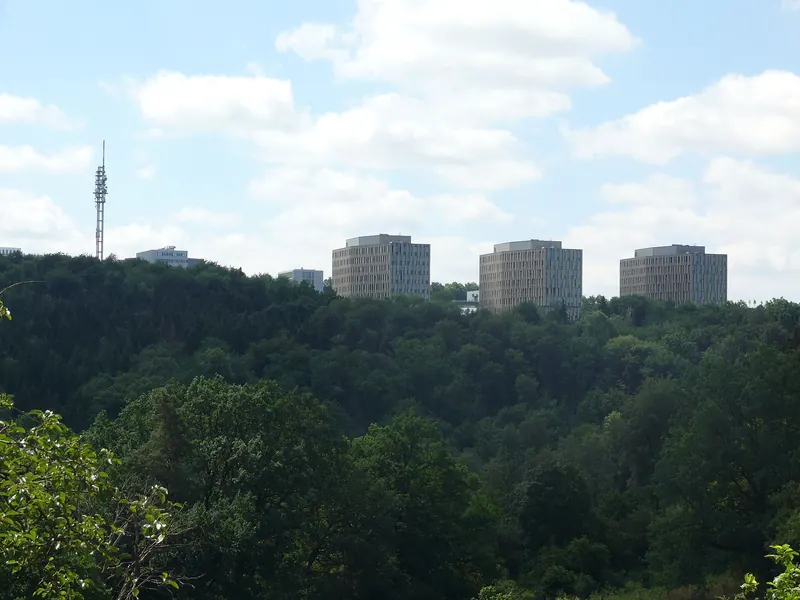

Objektbetreuung
Regelmäßige Rundgänge, Kleinreparaturen, Schlüssel- und Zugangsorganisation. Wir sehen Probleme, bevor Ihre Mieter sie melden.
Facility Management · Ulm & Region
APM Ulm übernimmt das komplette Facility Management Ihrer Immobilie – von der Objektbetreuung über Haustechnik und Brandschutz bis zu den Außenanlagen. Für Büro-, Gewerbe- und Forschungsgebäude.

Leistungen
Technisch, infrastrukturell, organisatorisch: Wir kümmern uns um alles, damit Ihr Gebäude läuft – und Sie sich um Ihr Geschäft kümmern können.
Regelmäßige Rundgänge, Kleinreparaturen, Schlüssel- und Zugangsorganisation. Wir sehen Probleme, bevor Ihre Mieter sie melden.
Heizung, Lüftung, Sanitär, Elektro: Wir koordinieren Wartungen und halten Prüffristen im Blick – von der Aufzugsprüfung bis zur DGUV V3.
Rettungswege frei, Feuerlöscher, Rauchabzug und Brandmeldeanlage geprüft, Brandschutzordnung aktuell. Wir organisieren, dokumentieren und begleiten Begehungen.
Grünpflege, Wege und Parkflächen, Räum- und Streudienst – damit jeder sicher ankommt, auch im Januar.
Wir steuern Reinigung, Entsorgung und Handwerker, prüfen die Leistung und sind die eine Nummer für alles.
Etwas fällt aus? Wir nehmen die Meldung auf, beheben selbst oder holen den richtigen Fachbetrieb – und melden zurück, wenn es erledigt ist.
Praxisbeispiel
Am Oberen Eselsberg ist seit den 1980er-Jahren die Wissenschaftsstadt gewachsen: Forschungsinstitute, Labore und Entwicklungszentren namhafter Unternehmen. Hier betreuen wir Objekte im kompletten Facility Management.



Science Park III
40 Hektar,
die gerade wachsen.
Neue Labor- und Bürogebäude am Eselsberg. Neue Technik – wir sind bereit.
* Angabe der IHK Ulm, Stand 2014.
So starten wir
Wir sehen uns Ihr Objekt gemeinsam an: Technik, Flächen, Prüfpflichten, offene Punkte.
Anlagen, Fristen und Ansprechpartner übersichtlich an einem Ort dokumentiert.
Feste Rundgänge, schnelle Reaktion bei Störungen, Fachfirmen im Griff.
Regelmäßig auf einen Blick: was erledigt ist, was geplant ist, was ansteht.
Kontakt
Kurz anrufen oder schreiben – wir melden uns, schauen uns das Gebäude an und machen Ihnen ein klares Angebot.